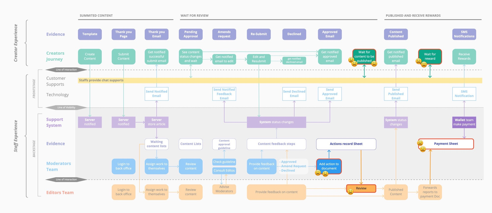
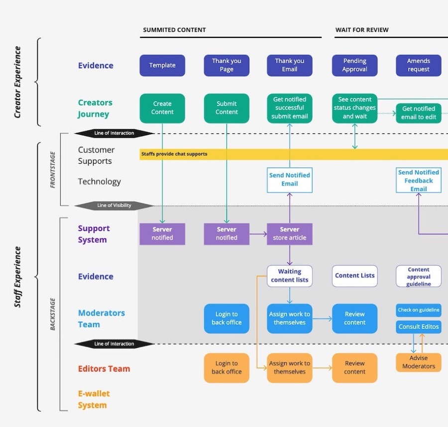

Where did my reward go?
A two-week service blueprint across three teams that traced creators' missing rewards to a manual copy-paste process, and replaced it with automation.

The problem
Creators kept complaining about missing rewards and slow reviews, and no one knew whether the system or the process was to blame.
What I did
Talked to every role involved, tagged support tickets and mapped the end-to-end process as a service blueprint.
Outcome
Automated reward payments on a fixed weekday: shorter waits, fewer mistakes, no more manual copy-paste.
The problem
Support chats were full of the same question: where is my reward?
- Repeated complaints about missing rewards and slow content reviews.
- Unknown cause: a system bug, or something in how teams worked together?
- Frequent misunderstandings between the product team and the content editors, because nobody could see the other side's process.

Research from 6 angles
Every touchpoint
Reviewed all outbound messages, like system emails, to find where staff and creators interact.
Every role
Talked to editors, moderators, developers, support and the wallet team about their daily work.
Every ticket
Cleaned and tagged customer support tickets to see which issues came up most.
The root cause: copy & paste
It wasn't a bug. It was a spreadsheet.
At each review step, editors copied and pasted lists of articles to update their status, then passed them on to the next team. The final list was pasted again into a payment sheet for the wallet team.
- Repetitive action logging between editors and community moderators.
- Manual documentation from content list to payment sheet.
Every hand-off was a chance to drop an article, and with it, a creator's reward.
Outcome & learnings
Outcome
- I explored options with developers and proposed automating reward payments inside the system.
- It was implemented with a fixed payout weekday, so creators know when to expect their money.
- Removing the copy-paste steps cut creator waiting time and human error.
- Teams finally understood how the others worked and what they expected from each other.
What I learned
- When a product grows fast, internal workflows need design too, before the workload breaks them.
- Automation beats checklists for avoiding repeat human mistakes.
- Keep the blueprint as a living document that every team can access.